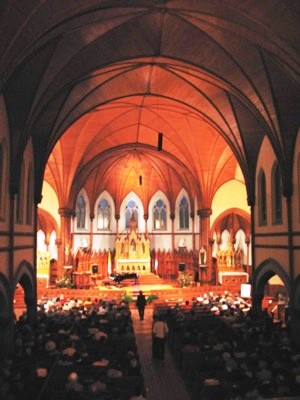
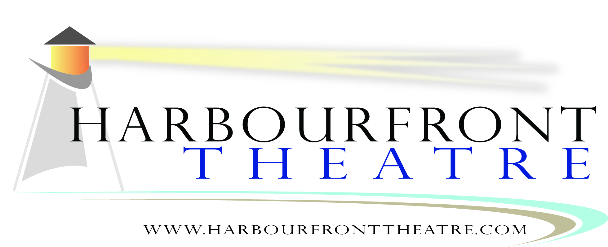
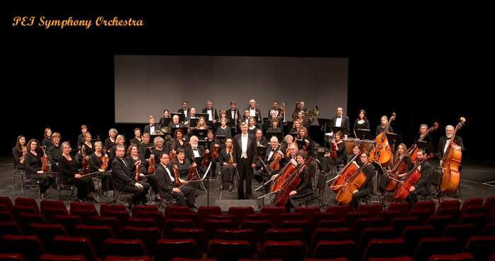

Leave an
Artistic
Legacy
To actively preserve and promote Celtic culture and heritage, through quality educational programming
Celtic culture comes alive at The College of Piping & Celtic Performing Arts of Canada! Based in Summerside, and affiliated with The College of Piping in Glasgow, The College has developed a world-class reputation as an international school of excellence in Highland bagpiping, drumming, Highland dancing and Island step dancing. The only year-round institution of its kind in North America, it attracts students from all over the world who come to learn the traditional Celtic arts, passed down from generation to generation.
Since 1990, The College of Piping has played an integral and accountable role within the arts community, both regionally and nationally. As a high caliber training facility, The College supports the artistic development of the next generation of Celtic artists in Canada. The College also plays a significant leadership role by providing performance opportunities to hundreds of emerging and established artists. Given that seventy percent of the Island’s population is descended from Scots and Irish settlers, Prince Edward Island is a particularly appropriate setting for this unique organization.
collegeofpiping.com
info@collegeofpiping.com
BN 12413 8520 RR 0001
MUSIC YOU CAN HEAR WITH YOUR HEART

Mission Statement
To present live, high quality, acoustical music that is enhanced by the unique setting.
Throughout the summer months, the Indian River Festival fills the historic St. Mary’s Church with music and provides an excellent venue for high caliber artists who appreciate the building’s inherent beauty. The “Indian River Festival” is truly an experience not to be missed, not only because its acoustics are outstanding, but because it takes place in a pastoral setting which is truly out of the ordinary. Since 1996, the Festival has been presenting some of the best Classical, Chamber, Choral, Celtic and Jazz music produced in all of Canada.
From the Malpeque Bay oysters served at the Festival to the quality of the artistic programming, the Indian River Festival is an exceptional event in which to enjoy a musical experience in Atlantic Canada.
WEBSITE: www.indianriverfestival.com
Kensington's
Historic Train Station
Broadway Street, Kensington, PEI
(tel)
902-836-3733
(toll free) 1-866-856-3733
Open June July &
August
VICTORIA PLAYHOUSE
Victoria Playhouse
Prince Edward Island’s Longest Running Little Theatre
Mission Statement
The Victoria Playhouse, an integral part of Island artistic life, is a vibrant centre of creativity, inspiring imagination, stronger communities and love of live performance.
A Brief Description
The Victoria Playhouse, PEI’s Longest Running Little Theatre, has operated out of the historic Victoria Community hall in Victoria by the Sea for over a quarter century and is the landmark cultural attraction for the South Shore area. The Victoria Playhouse presents a twelve week theatre arts festival annually from late June through September producing quality professional theatrical productions and musical concerts emphasizing Island, Maritime and Canadian works. During the off-season the company presents concerts and mounts productions by the Victoria Playhouse Drama Club, the amateur arm of the theatre company.
The Victoria Playhouse also plays an important role as a community resource within the cultural sector, providing a professionally operated venue and work and training opportunities for Islanders involved in the arts. The theatre company contributes significantly to the social and economic vitality of the community and is a catalyst for sustainable community development.
Contact Info
PO Box 83,Victoria by the Sea, PE, C0A 2G0
(P) 902-658-2370 (F) 902-658-2118
www.victoriaplayhouse.com ● info@victoriaplayhouse.com
Charitable Status # 108103219RR0001
JUBILEE THEATRE

Mission Statement
To provide a continuous live entertainment service to the Prince Edward Island community and its visitors, featuring both local and touring productions, while being the driving force within the community to encourage and nurture the development and appreciation of the performing arts.
Brief Description
The Harbourfront Theatre, Prince Edward Island’s second largest live performing arts venue, opened its doors in July 1996. This beautifully appointed 520 seat facility has established itself as one of Prince County’s foremost attractions, providing a venue for the Island’s multitude of musical and theatrical talent and renowned touring artists, and as a valuable tourism product for the region.
Owned by the Regional Cultural Events Centre, a registered charitable, non-profit organization managed by a board of directors, general manager, and director of operations, the theatre boasts a friendly, knowledgeable, professional staff and a dedicated core of over 60 volunteers. Programming is designed to offer diversity in both genre and cultural origin, such as that of our Acadian and Aboriginal sectors, and the facility is ideally suited to a myriad of uses, including plays, concerts, opera, ballet, comedy & magic shows, conferences, receptions, trade shows and public forums.
The Harbourfront Theatre carries out its mandate by providing performance opportunities and professional expertise to local, regional and international artists and user groups, as well as their in-house adult and youth theatre troupes, and schools and youth in the community. Theatre personnel provide lighting and sound design, rehearsal space and time, special effects advice and hands on mentoring. The result is a uniquely valuable artistic and production experience for all involved, a much higher quality end product for the audience, and a deepened sense of community ownership in the Harbourfront Theatre.
WEBSITE: www.jubileetheatre.com
124
Harbour Drive
Summerside, Prince Edward Island
Canada
(tel) 800-708-6505
PEI SYMPHONY ORCHESTRA

Our mission:
To provide live symphonic music of high quality for the people of PEI, and to contribute to the artistic life of the community through the presentation of a series of live concerts;
To provide experience and practical training in orchestral music for Island students and community musicians; to provide the members of the orchestra with the opportunity to learn orchestral music representative of all styles and periods, and to perform it in concert to the very best of their individual and collective technical and musical abilities;
To provide gifted PEI performers with the opportunity to perform with a large orchestra.
Established in 1967, the PEI Symphony Orchestra brings orchestral music to the communities of PEI and provides performance experiences for both professionals and non-professionals alike. The PEISO presents four concerts each season at the Confederation Centre of the Arts.
Music Director: Dr. James Mark
General Manager: Annette Campbell
BN 11910 3216 RR 0001
LE CARREFOUR DE I’ISLE-SAINT-JEAN
WEBSITE:
COMMUNITY FOUNDATION
OF PRINCE EDWARD ISLAND
Leave an Artistic Legacy
Part of the vibrancy and attraction of Prince Edward Island is the sheer range and nature of the arts scene, especially during the summer season.
In addition to some core funding from the provincial government, arts organizations depend on support from patrons and donors; without private support, the arts scene on PEI would be severely limited.
Thanks to support from the Province of Prince Edward Island, the Government of Canada, the Samuel and Saidye Bronfman Family foundation, The community foundation of Prince Edward Island, a number of arts organizations participated in an organizational strengthening activity organized by the Community Foundation of Prince Edward Island. This brochure is a follow-up initiative by the six major participants.
Each of the organizations named in the panels have established a permanent endowment within the Community Foundation, the income from which will be paid to the organization on an annual basis.
THE COMMUNITY
FOUNDATION OF
PRINCE EDWARD ISLAND
119-121 QUEENS STREET
CHARLOTTETOWN, PEI
(902) 892-3440